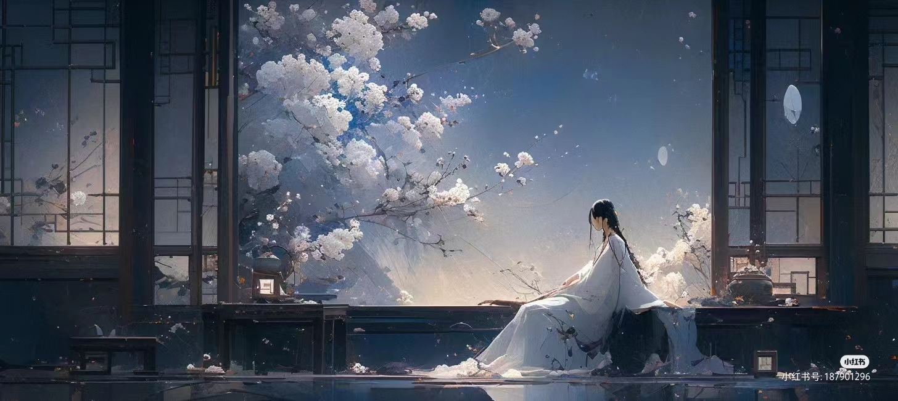

相见时难别亦难，东风无力百花残。
春蚕到死丝方尽，蜡炬成灰泪始干。
晓镜但愁云鬓改，夜吟应觉月光寒。
蓬山此去无多路，青鸟殷勤为探看。
李商隐的诗歌尤其具有魔力，时间与空间，物体和情感在一句诗中水乳交融，变幻共生，浓缩了一个散发着典雅神秘气息的诗意世界。
后来，李商隐和朋友在七夕节到了一座道观，李商隐去的这座道观尤其来历不凡，乃当年唐玄宗的妹妹玉真公主出家之地。 为了匹配公主的身份，玄宗拨了巨款，道观规模很大。那天，道观内正在举办一场隆重的活动。 只见一位皇族公主缓缓而出，两位侍女跟在身后。没有早一步，也没有晚一步，在万丈红尘之外，李商隐跟其中一个侍女四目相对，那一刻，电光火石。 那个侍女叫宋华阳。李商隐同学还有点害羞。 “你看天上的星星多美，我想跟你一起看看星星。” “我怕公主担心，看完星星我就回去。” “那我们就看一颗吧。” “好的，哪一颗？” “启明星。” …… 多么浪漫的夜晚啊。 但是，宋华阳被告知要和公主回京城，她毕竟只是一个侍女，冲不破命运，她连告别的机会都没有，只派了一个丫鬟送信。 李商隐非常郁闷，涛涛悲情化作一首诗,无题。
